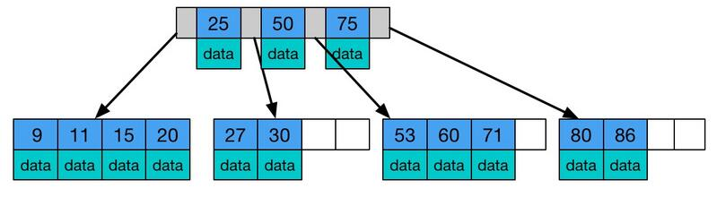

MySQL数据库的索引
索引的定义
定义
MySQL官方对索引的定义：索引（Index）是帮助MySQL 高效获取数据的数据结构。可以得到索引的本质是数据结构，可以简单理解为排好序的快速查找数据结构。这种数据结构往往空间很大，是存在硬盘里的，又称为磁盘级索引。
优缺点
优势：
- 提高数据检索的效率，降低数据库的IO成本。
- 通过索引列对数据进行排序，降低数据排序的成本，降低了CPU的消耗。
劣势：
- 虽然索引提高了查询速度，但同时会降低更新表的速度。在更新表时，MySQL不仅要更新数据，也要维护索引，调整因为更新所带来的键值变化后的索引信息（所以说在频繁更新的列上不建议建索引）。
- 实际上索引也是一张表，该表保存了主键与索引字段，并指向实体表的记录，所以索引列也是要占用空间的。
索引常见的实现模型
哈希表
哈希表是一种以键-值（key-value）存储数据的结构，我们只要输入待查找的值即key，就可以找到其对应的值即Value。哈希的思路很简单，把值放在数组里，用一个哈希函数把key换算成一个确定的位置，然后把value放在数组的这个位置。不可避免地，多个key值经过哈希函数的换算，会出现同一个值的情况，即哈希冲突。处理这种情况的一种方法是，拉出一个链表。哈希表存储是无序的，这样做的好处是增加新的User时速度会很快，只需要往后追加。但缺点是，因为不是有序的，所以哈希索引做区间查询的速度是很慢的。哈希表这种结构适用于只有等值查询的场景，
数组
有序数组在等值查询和范围查询场景中的性能就都非常优秀。但是，在需要更新数据的时候就麻烦了，你往中间插入一个记录就必须得挪动后面所有的记录，成本太高。所以，有序数组索引只适用于静态存储引擎，
搜索树
二叉搜索树的特点是：每个节点的左儿子小于父节点，父节点又小于右儿子。这样在搜索的时候，就可以直接比较大小顺着路径找到目标。当然为了维持O(log(N))的查询复杂度，你就需要保持这棵树是平衡二叉树。为了做这个保证，更新的时间复杂度也是O(log(N))，树可以有二叉，也可以有多叉。多叉树就是每个节点有多个儿子，儿子之间的大小保证从左到右递增。
树可以有二叉，也可以有多叉。多叉树就是每个节点有多个儿子，儿子之间的大小保证从左到右递增。以InnoDB的一个整数字段索引为例，这个N差不多是1200。这棵树高是4的时候，就可以存1200的3次方个值，这已经17亿了。考虑到树根的数据块总是在内存中的，一个10亿行的表上一个整数字段的索引，查找一个值最多只需要访问3次磁盘。其实，树的第二层也有很大概率在内存中，那么访问磁盘的平均次数就更少了。
B树
B树是一颗多路平衡查找树，它类似普通的平衡二叉树，不同的一点是B树允许每个节点有更多的子节点。下图是 B树的简化图.
B树有如下特点:
- 所有键值分布在整颗树中（索引值和具体data都在每个节点里）；
- 任何一个关键字出现且只出现在一个结点中；
- 搜索有可能在非叶子结点结束（最好情况O(1)就能找到数据）；
- 在关键字全集内做一次查找,性能逼近二分查找；
B+ 树
B+树是B树的变体，也是一种多路搜索树, 它与 B树的不同之处在于:
- 所有关键字存储在叶子节点出现,内部节点(非叶子节点并不存储真正的 data)
- 为所有叶子结点增加了一个链指针
B树与B+树的对比
- B+树相比B树特点
- B+树非叶子节点不保存数据相关的信息，只保存关键字和子节点的引用，关键字对应的数据保存在叶子节点中，叶子节点是顺序排列的，并且相邻节点具有顺序引用的关系，通过指针进行链接，实际上是一个有序链表。
- B+树的关键字采用闭合区间，这也是它之所以能够实现除了叶子节点都不放数据的结构特性，[1，28)，假如找1，显然我们就一直往下找直到叶子节点，而如果在B树里，如果1是关键字，那在根节点就已经命中了；
- B+树的关键字为什么采用左闭合区间而不是右闭？因为我们的使用中一般主键数据都是是自增的，所以往右边插入比较多，所以设计成左闭合区间；
- B+树作为索引树相比B树优点
- B+树是B树的变种（plus）多路绝对平衡查找树，它拥有B树的优势
- B+树的扫库扫表的能力更强（只需要扫叶子节点，而且叶子节点是有序链表）
- B+树的磁盘读写能力更强——高扇出性（非叶子节点不保存数据区，每个磁盘块可以保存更多的关键字）
- B+树的排序能力更强（B+树天然具备排序功能，B+树所有的叶子节点数据构成了一个有序链表，在查询大小区间的数据时候更方便，数据紧密性很高）
- B+树的查询效率更加稳定（IO的次数恒定，因为叶子节点的深度相同）
InnoDB 的索引模型
在InnoDB中，表都是根据主键顺序以索引的形式存放的，这种存储方式的表称为索引组织表。InnoDB使用了B+树索引模型，所以数据都是存储在B+树中的。每一个索引在InnoDB里面对应一棵B+树。
在InnoDB中数据和索引是存储在一起的，在InnoDB中，真正的数据存储在聚集索引（默认为主键索引）的叶子节点上，所以说它是也主键为索引来组织数据的存储的，而且除了聚集索引，其他索引（辅助索引）的叶子节点上存的是对应数据行主键的值，所以我们如果用辅助索引查找数据时会先从辅助索引找到对应行的主键，然后再用聚集索引去找到真正的数据，这个过程也称为回表。因为辅助索引不包含行记录的所有数据，这就意味着每页可以存放更多的键值，因此其高度一般都要小于聚集索引。总结就是：
主键索引的叶子节点存的是整行数据。在InnoDB里，主键索引也被称为聚簇索引（clustered index）。
非主键索引的叶子节点内容是主键的值。在InnoDB里，非主键索引也被称为二级索引（secondary index）。
基于主键索引和普通索引的查询有什么区别
- 如果语句是select * from T where ID=500，即主键查询方式，则只需要搜索ID这棵B+树；
- 如果语句是select * from T where k=5，即普通索引查询方式，则需要先搜索k索引树，得到ID的值为500，再到ID索引树搜索一次。这个过程称为回表。
也就是说，基于非主键索引的查询需要多扫描一棵索引树。因此，我们在应用中应该尽量使用主键查询。
索引维护
B+树为了维护索引有序性，在插入新值的时候需要做必要的维护。当需要插入的当前数据页已经满的了话，这时候需要申请一个新的数据页，然后挪动部分数据过去。这个过程称为页分裂。当相邻两个页由于删除了数据，利用率很低之后，会将数据页做合并。合并的过程，可以认为是分裂过程的逆过程。
在建表的时候，建立非业务字段的自增主键来实现递增的追加插入，不涉及到挪动其他记录，也不会触发叶子节点的分裂。自增主键是指自增列上定义的主键，在建表语句中一般是这么定义的： NOT NULL PRIMARY KEY AUTO_INCREMENT。需要注意的是，自增主键需要占用空间小的字段，主键长度越小，普通索引（叶子节点数据存储主键，回表查询）的叶子节点就越小，普通索引占用的空间也就越小。
联合索引
联合索引概念
联合索引：根据创建联合索引的顺序，以最左原则进行where检索，比如（age，name）以age=1 或 age= 1 and name=‘张三’可以使用索引，单以name=‘张三’ 不会使用索引，考虑到存储空间的问题，还请根据业务需求，将查找频繁的数据进行靠左创建索引。
联合索引存储结构
既然是一个索引，必然是一个B+树，假设联合索引(col1, col2,col3)，其非叶子节点存储的是第一个关键字的索引，而叶节点存储的则是三个关键字col1、col2、col3三个关键字的数据，且按照col1、col2、col3的顺序进行排序。如图所示：
覆盖索引
覆盖索引是select的数据列只用从索引中就能够取得，不必读取数据行，换句话说查询列要被所建的索引覆盖，所要查询的数据在索引数结构中就可以取到，就不用回表去查ID然后再在完整的数据中取想要的数据。
因此可以直接提供查询结果，不需要回表。也就是说，在这个查询里面，索引k已经“覆盖了”我们的查询需求，我们称为覆盖索引。
最左前缀原则
最左前缀原则是，不需要为每一种查询都设计一个索引，只要满足最左前缀，就可以利用该联合索引来加速检索。这个最左前缀可以是联合索引的最左N个字段，也可以是字符串索引的最左M个字符。
在建立联合索引的时候，如何安排索引内的字段顺序？
这里我们的评估标准是，索引的复用能力。因为可以支持最左前缀，所以当已经有了(a,b)这个联合索引后，一般就不需要单独在a上建立索引了。因此，第一原则是，如果通过调整顺序，可以少维护一个索引，那么这个顺序往往就是需要优先考虑采用的。
如果既有联合查询，又有基于a、b各自的查询，查询条件里面只有b的语句，是无法使用(a,b)这个联合索引的，这时候不得不同时维护(a,b)、(b) 这两个索引。
索引下推Index Condition Pushdown(ICP)
如上所述，满足最左前缀原则的时候，最左前缀可以用于在索引中定位记录，以联合索引（name, age）为例。如果现在有一个需求：检索出表中“名字第一个字是张，而且年龄是10岁的所有男孩”。那么，SQL语句是这么写的：
1 | mysql> select * from tuser where name like '张%' and age=10 and ismale=1; |
这个语句在搜索索引树的时候，只能用 “张”，找到第一个满足条件的记录ID3，在MySQL 5.6之前，只能从ID3开始一个个回表。到主键索引上找出数据行，再对比字段值。执行流程如下图所示：
在(name,age)索引里,这个过程InnoDB并不会去看age的值，只是按顺序把“name第一个字是’张’”的记录一条条取出来回表。因此，需要回表4次。
而MySQL 5.6 引入的索引下推优化（index condition pushdown)， 可以在索引遍历过程中，对索引中包含的字段先做判断，直接过滤掉不满足条件的记录，让满足检索条件的行去回表找到完整的行数据，减少回表次数。
下图显示InnoDB在(name,age)索引内部就判断了age是否等于10，对于不等于10的记录，直接判断并跳过。在我们的这个例子中，只需要对ID4、ID5这两条记录回表取数据判断，就只需要回表2次。

索引建立原则
给表创建索引时，应该创建哪些索引，每个索引应该包含哪些字段，字段的顺序怎么排列，这个问题没有标准答案，需要根据具体的业务来做权衡。：
既然这是一个权衡问题，没有办法保证所有的查询都高效，那就要优先保证高频的查询高效，较低频次的查询也尽可能的使用到尽可能长的最左前缀索引。可以借助pt-query-digest来采样统计业务查询语句的访问频度，可能需要迭代几次才能确定联合索引的最终字段及其排序。
注意， InnoDB 引擎中,虽然删除了表的部分记录数据,但是它的索引数据还在, 并未释放，往往会出现数据空间不大，索引占用的空间却巨大，这是因为索引可能因为删除，或者页分裂等原因，导致数据页有空洞，重建索引的过程会创建一个新的索引，把数据按顺序插入，这样页面的利用率最高，也就是索引更紧凑、更省空间。
普通索引与唯一索引的区别
- 对于普通索引来说，查找到满足条件的第一个记录(5,500)后，需要查找下一个记录，直到碰到第一个不满足k=5条件的记录。
- 对于唯一索引来说，由于索引定义了唯一性，查找到第一个满足条件的记录后，就会停止继续检索。
为字符串建立索引
当需要为邮箱这种很长的字符串建立索引时，可以使用前缀索引，也就是说，可以定义字符串的一部分作为索引，如：
1 | mysql> alter table SUser add index index2(email(6)); |
这样的好处是占用的空间会更小但，这同时带来的损失是，可能会增加额外的记录扫描次数。并且，使用前缀索引就用不上覆盖索引对查询性能的优化了。
其他方式：
第一种方式是使用倒序存储:当需要建索引的目标字符串前缀区分度太低，如身份证，可以使用倒序存储。如：
1 | mysql> select field_list from t where id_card = reverse('input_id_card_string'); |
**第二种方式是使用hash字段:**可以在表上再创建一个整数字段，来保存身份证的校验码，同时在这个字段上创建索引。
1 | mysql> alter table t add id_card_crc int unsigned, add index(id_card_crc); |
然后每次插入新记录的时候，都同时用crc32()这个函数得到校验码填到这个新字段。由于校验码可能存在冲突，也就是说两个不同的身份证号通过crc32()函数得到的结果可能是相同的，所以你的查询语句where部分要判断id_card的值是否精确相同。
1 | mysql> select field_list from t where id_card_crc=crc32('input_id_card_string') and id_card='input_id_card_string' |
这样，索引的长度变成了4个字节，比原来小了很多。
inoodb的change buffer
当需要更新一个数据页时，如果数据页在内存中就直接更新，而如果这个数据页还没有在内存中的话，在不影响数据一致性的前提下，InooDB会将这些更新操作缓存在change buffer中，这样就不需要从磁盘中读入这个数据页了。在下次查询需要访问这个数据页或者后台定期merge的时间到了，或数据库正常关闭的时候，将数据页读入内存，然后执行change buffer中与这个页有关的操作。通过这种方式就能保证这个数据逻辑的正确性。
change buffer用的是buffer pool里的内存，因此不能无限增大。change buffer的大小，可以通过参数innodb_change_buffer_max_size来动态设置。这个参数设置为50的时候，表示change buffer的大小最多只能占用buffer pool的50%。
对于唯一索引来说，所有的更新操作都要先判断这个操作是否违反唯一性约束，这必须要将数据页读入内存才能判断，就没必要使用change buffer。
change buffer的merge过程：
merge的执行流程是这样的：
- 从磁盘读入数据页到内存（老版本的数据页）；
- 从change buffer里找出这个数据页的change buffer 记录(可能有多个），依次应用，得到新版数据页；
- 写redo log。这个redo log包含了数据的变更和change buffer的变更。
到这里merge过程就结束了。这时候，数据页和内存中change buffer对应的磁盘位置都还没有修改，属于脏页，之后各自刷回自己的物理数据，
change buffer的使用场景
对于写多读少的业务来说，页面在写完以后马上被访问到的概率比较小，此时change buffer的使用效果最好。这种业务模型常见的就是账单类、日志类的系统。
反过来，假设一个业务的更新模式是写入之后马上会做查询，那么即使满足了条件，将更新先记录在change buffer，但之后由于马上要访问这个数据页，会立即触发merge过程。这样随机访问IO的次数不会减少，反而增加了change buffer的维护代价。所以，对于这种业务模式来说，change buffer反而起到了副作用。
所以，综上尽量选择普通索引。如果所有的更新后面，都马上伴随着对这个记录的查询，那么应该关闭change buffer。而在其他情况下，change buffer都能提升更新性能。
与redo log的区别
redo log 主要节省的是随机写磁盘的IO消耗（转成顺序写），而change buffer主要节省的则是随机读磁盘的IO消耗（需要添加或者更新的数据页没有在内存中，就先不读到内存中，写到change buffer中，等到下次读操作的时候顺带写入内存，再写入磁盘中）。
小问题：
change buffer一开始是写内存的，那么如果这个时候机器掉电重启，会不会导致change buffer丢失呢？change buffer丢失可不是小事儿，再从磁盘读入数据可就没有了merge过程，就等于是数据丢失了。会不会出现这种情况呢？
答案是会导致change buffer丢失，会导致本次未完成的操作数据丢失，但不会导致已完成操作的数据丢失。
1.change buffer中分两部分，一部分是本次写入未写完的，一部分是已经写入完成的。
2.针对未写完的，此部分操作，还未写入redo log，因此事务还未提交，所以没影响。
3.针对，已经写完成的，可以通过redo log来进行恢复。所以，不会对数据库造成影响。
在第三条中如果掉电又分为两部分：未写入内存，和已经写入内存。持久化的change buffer数据已经merge,不用恢复。主要分析没有持久化的数据
情况又分为以下几种:
(1)change buffer写入,redo log虽然做了fsync但未commit,binlog未fsync到磁盘,这部分数据丢失
(2)change buffer写入,redo log写入但没有commit,binlog以及fsync到磁盘,先从binlog恢复redo log,再从redo log恢复change buffer
(3)change buffer写入,redo log和binlog都已经fsync.那么直接从redo log里恢复。
优化器选择索引的原则
索引区分度-基数
MySQL在真正开始执行语句之前，并不能精确地知道满足这个条件的记录有多少条，而只能根据统计信息来估算记录数。
这个统计信息就是索引的“区分度”。显然，一个索引上不同的值越多，这个索引的区分度就越好。而一个索引上不同的值的个数，我们称之为“基数”（cardinality）。也就是说，这个基数越大，索引的区分度越好。
我们可以使用show index方法，看到一个索引的基数。因为是基于初略统计信息，结果会有出入。
基数计算方法
MySQL采样统计的方法：采样统计的时候，InnoDB默认会在该索引树上选择N个数据页，统计这些页面上的不同值，得到一个平均值，然后乘以这个索引的页面数，就得到了这个索引的基数。
而数据表是会持续更新的，索引统计信息也不会固定不变。所以，当变更的数据行数超过1/M的时候，会自动触发重新做一次索引统计。
在MySQL中，有两种存储索引统计的方式，可以通过设置参数innodb_stats_persistent的值来选择：
- 设置为on的时候，表示统计信息会持久化存储。这时，默认的N是20，M是10。
- 设置为off的时候，表示统计信息只存储在内存中。这时，默认的N是8，M是16。
由于是采样统计，所以不管N是20还是8，这个基数都是很容易不准的。
MySQL有时会选错索引
原因：
1.优化器会根据索引的统计区分度基数获得要用索引的预估扫描行数，预估扫描行数统计错误，会导致选错索引。
- 如果使用了普通索引，优化器还需要考虑回表查询所需要的时间，优化器会估算这两个选择的代价，从结果看来，优化器认为直接扫描主键索引更快。当然，从执行时间看来，这个选择并不是最优的。
解决办法：
- 统计信息不对。使用analyze table t 命令修正，来重新统计索引信息。开发的时候通常不会先写上force index。而是等到线上出现问题的时候，你才会再去修改SQL语句、加上force index。但是修改之后还要测试和发布，对于生产系统来说，这个过程不够敏捷。
- 修改语句，引导MySQL使用我们期望的索引
- 新建一个更合适的索引，来提供给优化器做选择，或删掉误用的索引。